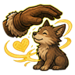
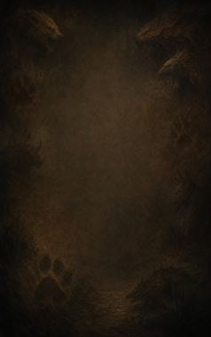
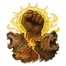
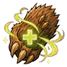
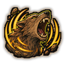
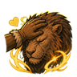
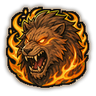
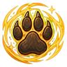
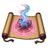

Tame Beast D
Win over a small wild animal on the spot (body size 1 at most).
| Rank | Chakra | Cooldown | Class level |
|---|---|---|---|
| D | 10 | 15 s | 2 |

Technique trees › Professions and ANBU
8 techniques · Ninjutsu tab
Unlocks through World of Naruto's own trees, a gene, a build choice or a profession.

Win over a small wild animal on the spot (body size 1 at most).
| Rank | Chakra | Cooldown | Class level |
|---|---|---|---|
| D | 10 | 15 s | 2 |

Every friend and animal around the trainer fights harder for a fight.
| Rank | Chakra | Cooldown | Class level |
|---|---|---|---|
| C | 18 | 25 s | 5 |

Tend an animal's wounds in a moment.
| Rank | Chakra | Cooldown | Class level |
|---|---|---|---|
| C | 18 | 25 s | 6 |

A beastly roar sends enemies around the trainer fleeing.
| Rank | Chakra | Cooldown | Class level |
|---|---|---|---|
| B | 30 | 42 s | 9 |

Win over a big wild animal, even an angry one (body size 3 at most).
| Rank | Chakra | Cooldown | Class level |
|---|---|---|---|
| B | 30 | 42 s | 11 |

Unleash one animal's full savagery for a fight.
| Rank | Chakra | Cooldown | Class level |
|---|---|---|---|
| A | 50 | 67 s | 14 |

S-rank. Win over any wild animal at all.
| Rank | Chakra | Cooldown | Class level |
|---|---|---|---|
| S | 95 | 333 s | 18 |

C/B/A-rank. Seal a weakened (below half health) or downed wild animal into a capture scroll. Using the scroll later releases it, tamed and bonded to the user. C: body size 1 at most, B: 2.5 at most, A: any.
| Rank | Chakra | Cooldown | Class level |
|---|---|---|---|
| C | 20 | 42 s | 5 |
| B | 35 | 42 s | 9 |
| A | 55 | 42 s | 13 |